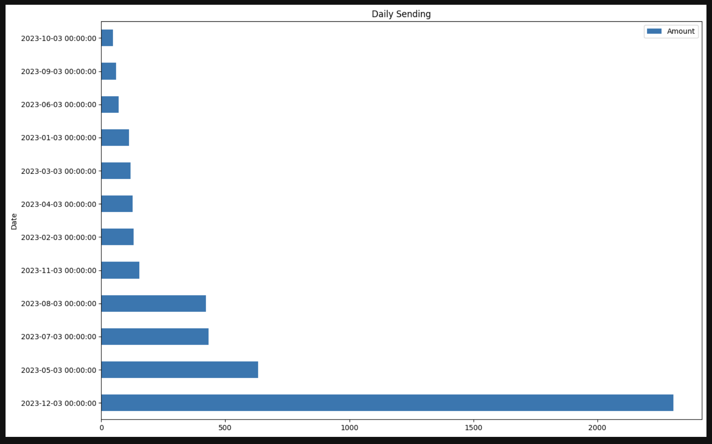
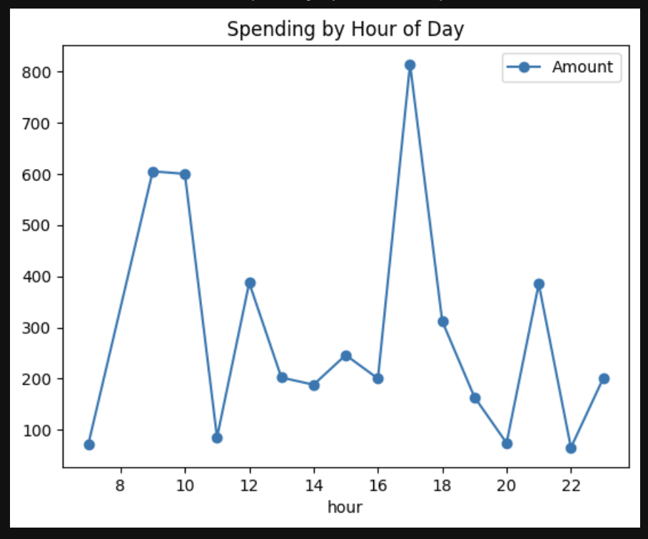
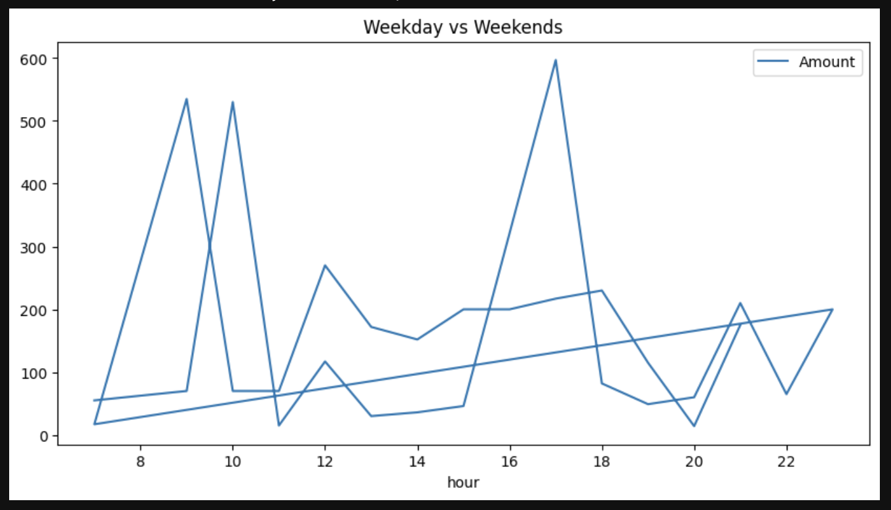

Daily Spending

Total Spending: Alone vs Friend
.png)
Spending by Hour of Day

Weekday vs Weekend Spending

Project Report | Python Data Processing & Analysis
This project processes and analyzes a personal expense dataset to clean the data, generate summary statistics, and extract meaningful insights about spending behavior. The goal is to demonstrate a complete data processing pipeline: loading raw data, cleaning it, analyzing it, and producing a human-readable report.
Dataset: expense.csv
Columns: Date, Item, Amount, Category, Time, Day
145
6
5
500
These values show that most expenses are small, with a few high-value purchases acting as outliers.
This indicates that a larger portion of the total spending happens when expenses are made alone compared to with friends.
This suggests that spending is highest on Sundays, indicating a weekend spending pattern.
This project demonstrates how raw expense data can be processed, cleaned, and analyzed to extract useful insights. The Data File Processor pipeline transforms messy CSV data into structured information and clear summaries. This approach can be extended to larger financial datasets or integrated into more advanced analytics systems.


